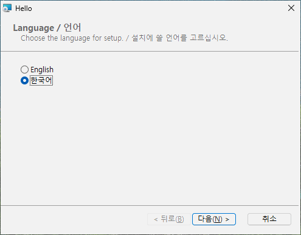
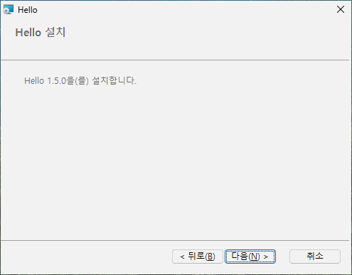

7 여러 언어
목표: 영어나 한국어로 말하는 패키지 하나를 만든다. 약관도 언어마다 따로 두고, 한국어 Windows 에서는 한국어가 미리 골라진다.
7.1 원본#
한국어 약관 LICENSE-ko.txt 가 LICENSE.txt 옆에 있다.
# tutorial 07: hello.toml
[package]
name = "Hello"
manufacturer = "Example Software"
version = "$(VERSION)"
arch = "x64"
upgrade-code = "{3F2A6C1D-8B4E-4F7A-9C2D-5E6F7A8B9C0D}"
ui = "installdir"
license = "LICENSE.txt"
downgrade-message = "A newer Hello is already installed."
[define]
VERSION = "1.5.0"
[ui]
languages = ["ko"]
license-ko = "LICENSE-ko.txt"
launch = "file:Hello"
[ui-text.WelcomeText]
text = "This will install [ProductName] [ProductVersion]."
text-ko = "[ProductName] [ProductVersion]을(를) 설치합니다."
[dir.INSTALLDIR]
path = "ProgramFiles/Hello"
[file.Hello]
dir = "INSTALLDIR"
source = "dist/hello.exe"
[shortcut.StartMenu]
dir = "Programs"
name = "Hello"
target = "file:Hello"7.2 언어 더하기: languages#
페이지는 늘 영어다. [ui] 의 languages = ["ko"] 는 같은 패키지에 한국어를 더하고, 그러면:
- 첫 페이지가 어떤 언어를 쓸지 묻는다 - English 또는 한국어.
- 지역 형식(없으면 시스템 언어)이 한국어인 Windows 에서는 한국어가 이미 골라져 있다. 다른 곳에서는 English.
- 그 뒤의 모든 페이지 - 환영, 약관, 폴더, 준비, 진행, 완료, 그리고 취소, 오류, 사용 중인 파일, 디스크 공간, 유지 관리 페이지 - 가 고른 언어로 말한다.
영어만 있으면 언어 페이지가 없다. 조용한 설치(/qn)는 페이지를 보이지 않으므로 고를 필요가 없다. 명령줄의 RPLANGUAGE=ko 는 한국어를 미리 고른다 - 그래도 맨 먼저 나오는 언어 페이지에서, 그리고 조용한 설치에서:
msiexec /i hello.msi RPLANGUAGE=ko
7.3 언어마다 약관: license-xx#
license-ko = "LICENSE-ko.txt" 는 한국어를 골랐을 때 보이는 약관이다. 영어(와 자기 약관이 없는 더한 언어)는 [package] license 를 보인다. .txt / .md / .rtf 규칙은 같다.
7.4 언어마다 글: text-xx#
[ui-text.ID] 에서 text 는 모든 언어의 글, text-ko 는 한국어 글이다. 내장 글은 모두 이미 영어와 한국어로 있다. text 를 준 곳에만 text-ko 를 주어 두 언어가 같은 말을 하게 한다.
7.5 영어와 한국어 말고 다른 언어#
rubrapack 의 내장 페이지는 영어와 한국어로 쓰여 있다. 다른 언어 - ja, de, fr 등 - 는 모든 글을 text-xx 로 직접 준다. 빠진 것은 빌드가 알려 준다:
hello.toml:16:1: error[RP1202]: language 'ja' has no built-in texts: give [ui-text.ID] text-ja for all of them (64 missing, the first is Back)그런 언어에는 [ui] 의 키 셋이 더 도움이 된다: name-ja(언어 페이지에 보일 이름), font-ja(그 페이지들의 글꼴), langid-ja(그 언어를 미리 고르게 하는 Windows 언어 번호 - 수 하나나 목록). 흔한 언어(ja, zh, de, fr, es, it, pt, nl, pl, ru, uk, tr, vi, th)에는 이 셋이 내장되어 있다. 한국어 페이지는 맑은 고딕, 영어 페이지는 Segoe UI 글꼴을 쓴다.
7.6 번역되지 않는 것#
- Windows Installer 자체의 말 - 기능 트리의 크기와 메뉴, "남은 시간", 오류 메시지 - 은 패키지가 아니라 Windows 에서 온다.
- 다운그레이드 안내문(3장)과
refuse-upgrade-below의 제거 안내문은 글이 하나씩이다. 두 언어가 다 필요하면 두 언어로 쓴다("A newer Hello is already installed. / 더 새 Hello 가 설치되어 있습니다."). [package] language = "ko-KR"는 패키지 자체의 언어 코드만 정한다. 페이지를 한국어로 만드는 것은languages다.
7.7 해 보기#
한국어 Windows 에서 hello.msi 를 두 번 누른다: 언어 페이지에 한국어가 골라져 있고, 그 뒤 모든 페이지가 한국어 약관과 함께 한국어다. English 를 고르면 같은 페이지가 LICENSE.txt 와 함께 영어로 나온다. 영어 Windows 에서 msiexec /i hello.msi RPLANGUAGE=ko 도 해 본다.

[ui-text.WelcomeText] 의 text-ko7.8 안에서 무슨 일이 일어났나#
Windows Installer 패키지에는 "여러 언어"라는 개념이 따로 없다: 페이지의 글은 그 표에 고정되어 있다. 그래서 rubrapack 은 모든 글을 속성 - 이름 붙은 값 - 으로 만들고 페이지에는 그 속성을 보인다:
C:\work\hello> rubrapack inspect hello.msi Property
...
RpT_WelcomeText This will install Hello 1.5.0.
RpT_WelcomeText_en This will install Hello 1.5.0.
RpT_WelcomeText_ko Hello 1.5.0을(를) 설치합니다.
...첫 페이지 전에 작은 동작들이 고른 언어의 글을 보이는 속성에 복사한다. 각 동작은 조건이 참일 때만 돈다:
C:\work\hello> rubrapack inspect hello.msi InstallUISequence
...
RpL_ko_26 RPLANGUAGE = "ko" 127
...
C:\work\hello> rubrapack inspect hello.msi CustomAction
...
RpL_ko_26 51 RpT_WelcomeText [RpT_WelcomeText_ko]형식 51 은 "속성 정하기"다: RpT_WelcomeText 가 RpT_WelcomeText_ko 의 값이 된다. 글은 패키지에 UTF-8(코드 페이지 65001)로 저장된다. 글자 인코딩은 제3부의 글자, 문자열 저장 방식은 제4부의 MSI 데이터베이스가 설명한다.